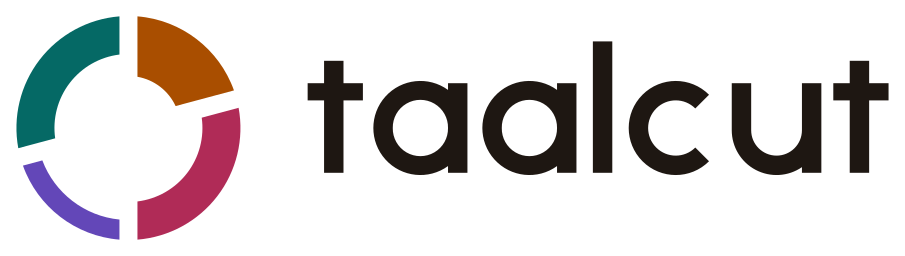
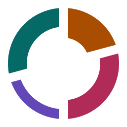

<!-- SPDX-License-Identifier: AGPL-3.0-or-later -->
<!-- Copyright (C) 2026 Taalcut contributors -->
<!doctype html>
<html lang="en">
  <meta charset="utf-8" />
  <title>Taalcut README stills</title>
  <link rel="stylesheet" href="slides.css" />

  <!-- Each section is one image: render.mjs saves it as .github/media/<data-slide>.webp. -->
  <section class="banner" data-slide="banner">
    <div class="copy">
      
      <h1>Your footage.<br />The rhythm you love.</h1>
      <p class="sub">
        Paste a reel you saved. Taalcut makes your version of it from your own camera roll, on your Mac.
      </p>
      <div class="chips">
        <span class="chip say">Say it: TAHL-cut</span>
        <span class="chip">Free macOS beta</span>
        <span class="chip">Open source</span>
      </div>
    </div>
    <div class="phones">
      <div class="phone left" style="background-image: url('build/stills/roll-repeat-05.jpg')"></div>
      <div class="phone mid" style="background-image: url('build/stills/roll-vietnam-02.jpg')"></div>
      <div class="phone right" style="background-image: url('build/stills/roll-repeat-06.jpg')"></div>
      <span class="tag" style="top: 26px; left: 150px">
        <i class="dot" style="background: var(--violet)"></i>AI pick · High
      </span>
      <span class="tag" style="top: 300px; right: -8px">
        <i class="dot" style="background: var(--teal-strong)"></i>You changed this
      </span>
    </div>
    <div class="rhythm">
      <div class="bars">
        <i style="flex: 3"></i><i style="flex: 2"></i><i style="flex: 2"></i
        ><i class="yours" style="flex: 2"></i> <i style="flex: 3"></i><i style="flex: 2"></i
        ><i style="flex: 2"></i><i style="flex: 3"></i> <i style="flex: 2"></i><i style="flex: 3"></i
        ><i style="flex: 2"></i><i style="flex: 2"></i>
        <i style="flex: 4"></i>
      </div>
      <div class="ticks">
        <i class="sam"></i><i></i><i></i><i></i><i></i><i class="sam"></i><i></i><i></i><i></i><i></i
        ><i class="sam"></i> <i></i><i></i><i></i><i></i><i class="sam"></i><i></i><i></i><i></i><i></i
        ><i class="sam"></i><i></i>
      </div>
    </div>
    <div
      class="kaatu"
      style="
        right: 596px;
        bottom: 26px;
        width: 132px;
        height: 132px;
        background-image: url('../../website/public/kaatu/kaatu-web-creator.webp');
        background-position: 100% 0;
      "
    ></div>
  </section>

  <section class="screen" data-slide="screen-agent">
    
    <div class="caption">
      <h2>Agent<span>Say what you want. It shows its plan before it changes anything.</span></h2>
      <p class="sample">Interface preview with sample media</p>
    </div>
  </section>

  <section class="screen" data-slide="screen-library">
    
    <div class="caption">
      <h2>Library<span>Your clips, indexed on your Mac and searchable in plain words.</span></h2>
      <p class="sample">Interface preview with sample media</p>
    </div>
  </section>

  <section class="screen" data-slide="screen-template">
    
    <div class="caption">
      <h2>Templates<span>A reel you saved, read into slots on its own beats.</span></h2>
      <p class="sample">Interface preview with sample media</p>
    </div>
  </section>

  <section class="screen" data-slide="screen-editor">
    
    <div class="caption">
      <h2>Editor<span>The cut on a timeline you can keep changing, by hand or by asking.</span></h2>
      <p class="sample">Interface preview with sample media</p>
    </div>
  </section>

  <section class="screen" data-slide="screen-make">
    
    <div class="caption">
      <h2>Make<span>Violet is a shot Taalcut picked. Teal is one you changed.</span></h2>
      <p class="sample">Interface preview with sample media</p>
    </div>
  </section>

  <section class="screen" data-slide="screen-consent">
    
    <div class="caption">
      <h2>Your call<span>It asks before a file of yours goes to a cloud model.</span></h2>
      <p class="sample">Interface preview with sample media</p>
    </div>
  </section>

  <section class="story" data-slide="story">
    <div class="copy">
      <p class="eyebrow">Ten days in Vietnam. One saved reel.</p>
      <h1>
        1,284 clips.<br />
        <span class="zero"
          >Zero
          <svg viewBox="0 0 268 118" fill="none" aria-hidden="true">
            <path
              d="M22 66C16 30 78 8 148 9c62 1 110 20 108 54-2 32-58 48-126 47C66 109 20 96 14 66 10 44 40 22 96 14"
              stroke="#b02b57"
              stroke-width="5"
              stroke-linecap="round"
            />
          </svg> </span
        >&nbsp;posts.
      </h1>
      <p class="then">
        I had the footage and the reel I wanted to copy. What I didn’t have was the evening it takes.
      </p>
    </div>
    <div class="print" style="top: 86px; right: 372px; width: 208px; transform: rotate(-6deg)">
      
    </div>
    <div class="print" style="top: 46px; right: 184px; width: 236px; z-index: 2; transform: rotate(2deg)">
      
    </div>
    <div class="print" style="top: 104px; right: 34px; width: 200px; transform: rotate(8deg)">
      
    </div>
  </section>

  <section class="avartan" data-slide="avartan">
    
    <div class="beats">
      <div class="beat">
        <span class="sign" style="background: var(--marigold-strong)">X</span>
        <div><b>Sam · marigold acts</b><span>Beats 1–2. The heaviest arc.</span></div>
      </div>
      <div class="beat">
        <span class="sign" style="background: var(--rose-strong)">2</span>
        <div><b>Tali · rose keeps the beat</b><span>Beats 3–5. A clap, a medium arc.</span></div>
      </div>
      <div class="beat">
        <span class="sign" style="background: var(--violet-strong)">0</span>
        <div><b>Khali · violet is the AI</b><span>Beats 6–7. The wave, the lightest arc.</span></div>
      </div>
      <div class="beat">
        <span class="sign" style="background: var(--teal-strong)">3</span>
        <div><b>Tali · teal is you</b><span>Beats 8–10. A clap, a medium arc.</span></div>
      </div>
    </div>
  </section>

  <section class="cast" data-slide="kaatu">
    <figure>
      <div style="background: url('../../website/public/kaatu/kaatu-web-story.webp') 0 0 / 300% 300%"></div>
      <figcaption>Waves hello</figcaption>
    </figure>
    <figure>
      <div
        style="background: url('../../website/public/kaatu/kaatu-web-creator.webp') 50% 0 / 300% 300%"
      ></div>
      <figcaption>Snips a clip</figcaption>
    </figure>
    <figure>
      <div
        style="background: url('../../website/public/kaatu/kaatu-web-creator.webp') 100% 0 / 300% 300%"
      ></div>
      <figcaption>Bops to the beat</figcaption>
    </figure>
    <figure>
      <div
        style="background: url('../../website/public/kaatu/kaatu-web-creator.webp') 0 100% / 300% 300%"
      ></div>
      <figcaption>Cheers you on</figcaption>
    </figure>
    <figure>
      <div
        style="background: url('../../website/public/kaatu/kaatu-web-story.webp') 100% 0 / 300% 300%"
      ></div>
      <figcaption>Dozes off</figcaption>
    </figure>
  </section>
</html>
